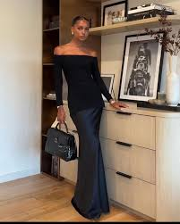

POLITICS
Brawl Disrupts Ugandan Parliament Over Coffee Bill
Chaos erupted in the Ugandan Parliament during debates on the controversial
National Coffee (Amendment) Bill, 2024. A physical altercation between MPs
Francis Zaake and Anthony Akol over a seat led to disruptions, with Akol
reportedly punching Zaake. Speaker Anita Among suspended 12 MPs involved
in the melee and tightened security measures in response.Despite the turmoil,
the bill was passed, intensifying debates about its impact on Uganda’s coffee
industry and governance,6,7 and 8.
CELEBRITY NEWS
Spotify Spotlights Ugandan Talent
Spotify’s RADAR documentary recently featured Ugandan artist Joshua Baraka,
highlighting his journey and unique blend of Afrosoul and 90s R&B. The
feature positions him as a global ambassador for Uganda’s music industry,
reflecting the growing recognition of local talent through corporate partnerships

HEALTH AND FITNESS
The Wellness Revolution
Holistic health is reshaping wellness, emphasizing the connection between mind, body,
and spirit. Practices like yoga, Pilates, and mindfulness are trending, promoting
stress relief alongside physical fitness. Wearable tech now tracks stress and sleep,
helping users build balanced routine.This shift isn’t just personal; workplaces and
fitness centers are integrating mental health support into their programs,
prioritizing sustainable, meaningful habits. Holistic health is no longer a trend—it’s
a lifestyle movement for better overall well-being.

FASHION AND LIFESTYLE
Tailored Elegance: Refined Fashion for Every Season
Tailored elegance is making a comeback with sleek, structured pieces like nipped-in
blazers and cigarette pants. This trend blends timeless sophistication with modern
comfort, offering versatile looks perfect for both office and casual wear. Key to
this style is clean lines, neutral tones, and fabrics that balance formality with
ease, ensuring polished outfits that work for any occasion.
LOVE AND ROMANCE
Love and Cozy Moments This Season
This season, the trend in love and romance is all about deepening connections through
meaningful experiences. From the cozy, intimate vibes of autumn to the growing embrace
of personal well-being, people are focusing on quality over quantity in their
relationships. Fall 2024's romantic aesthetic includes a blend of comfort and intimacy,
with rich, warm colors like deep burgundy and mulled wine setting the tone. Couples are
opting for more personal, meaningful activities such as nature walks, cozy nights in,
and even mindful, wellness-oriented getaways that help them connect on a deeper level.